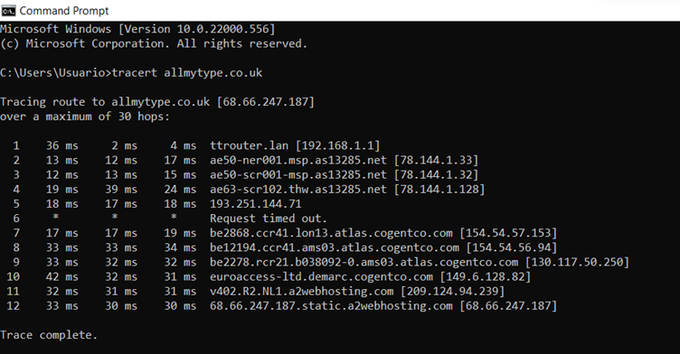

Network & Information Management
By demonstrating hands-on knowledge of one of the most important topics in information security today, network technology, this module will give you a solid understanding of security concepts and terminology. The goal of our class is to provide knowledge in the basics of both information security and network technology, as we assume no prior knowledge about these topics. In this lesson, vulnerabilities are assessed, penetration tests are performed, forensic analysis is performed, and breach management is defined. After a brief review of some of the challenges facing the Internet today, we will look at how recent and emerging network technology might help mitigate some of the problems.
The below objectives were accomplished
Information Security management system is based on three principles. Confidentiality, integrity, and availability constitute the basic principles of information security. An information security program must be designed to implement some of these principles in every element. CIA Triad is the collective name for all three.
- A deep understanding of Ethics — moral principles that governs Information Security management system.
- The key role in Information Security management system, by monitoring, detecting, investigating, analyzing, and responding to security.
- Confidentiality: making sure data can only be accessed by authorised people.
- Integrity: keeping data accurate and complete.
- Availability: making sure data can be accessed when it’s required.
- Non-Repudiation ability to prove the occurrence of a claimed event or action and its originating entities.
Skills And knowledge Acquired During This Module
- Understand the key concepts of Confidentiality, Integrity and Availability (CIA) in Cyber Security.
- Appreciate the competencies required to be able to address Cyber Security issues in Information Security management system.
- Gain awareness of the ethical and governance frameworks around information systems security and data protection acts.
- Developed an awareness of the implications of Information Security management system.
- Evaluated available techniques and technologies at database and metadata levels dealing with privacy and data disclosure.
- Critically evaluate the implications of vulnerabilities and threats in software and networks.
- Develop knowledge about approaches to identify vulnerabilities and threats.
- Apply knowledge to mitigate the identified issues
- Develop solutions that will efficiently identify vulnerabilities and threats in software and over networks.
- Develop security requirement documents to ensure security in Information Security management system.
- Develop the ability to apply concepts and principles of secure Information Security management system.
- Develop the ability to identify the software components and associated threats.
Unit 1
Network and Information Security Management: History & Definitions
- 1. The importance of Network and Information Security Management: History & Definitions in Cyber Security.
- 2. The skills and professional competencies required as Cyber Security professional.
- 3. The importance of ethics and governance framework within the context of Cyber Security.
- 4. computing infrastructure including the internet and the world wide web.
- 5. the types of security attacks and vulnerabilities in systems.
- 6. the types of networks; their configurations and security measure.
The information security management system is a documented management system which protects assets from threats and vulnerabilities by using a set of security controls.
COLLABORATIVE LEARNING DISCUSSION 1
Topic:
Read Glisson, W., Andel, T., McDonald, T., Jacobs, M., Campbell, M. & Mayr, J. (2015) Compromising a Medical Mannequin. Healthcare Information Systems and Technology (Sighealth).MY INITIAL POST
The context of the study is on the empirical analysis of the viability demonstrates medical systems are also considered IoT systems. The research according to the authors, is to investigate the development of a methodology for assessing vulnerabilities.
This action is performed through penetration tests for training purposes by students at the University of South Alabama on the istan mannequin, which is a medical mannequin that simulates respiratory, neurological and cardiovascular systems (CAE Healthcare).
The authors explained Cyber-physical threats intensively from the increasingly pervasive integration of technology into medical arenas. They were able to identify software vulnerabilities and have reported a growing number of exploitable vulnerabilities, and possible intentional failure on these istan medical mannequin security breaches are inevitable because of the long-term consequences as a result of the increasing dependence on technology.
They also outline fundamental security concerns like medical identity theft denial of service TCP network protocol vulnerable to DOS attacks. The 802.11 wireless transmissions communicate between the mannequin and the control machines, which is vulnerable to brute force attacks (Glisson et al., 2015). This attack allows the ability to control or reprogram these medical mannequins wirelessly. This attack also performs threats to elevate user privileges by performing a brute force attack (obtaining valid user and password) and security control attacks that deny service to the software application by simulating false entry signals and potentially causing physical damage. (Glisson et al. 2015) By incorrectly analysing life-threatening critical data by medical personnel, the breach of medical training environments may impact thousands of lives in the medical profession over the long term.
Among the first techniques to mitigate DDoS attacks is to minimise the area that can be targeted, thereby reducing the options for attackers and enabling the implementation of protections Information technology infrastructures.
The best defence against password attacks is ensuring that passwords are as strong as they can be. Multi-Factor Authentication Techniques and Honeypot systems are beneficial for detecting attackers. This requires establishing the proper authentication, privacy and confidentiality mechanisms. (Pankaj, 2005) Finally, it is vital to secure the different wireless communication protocols that the istan mannequin relies on to maintain a high level of security..
Reference
Glisson, W., Andel, T., Mcdonald, T., Jacobs, M., Campbell, M. and Mayr, J. (n.d.). Compromising a Medical Mannequin Compromising a Medical Mannequin. [online] Available at: https://arxiv.org/ftp/arxiv/papers/1509/1509.00065.pdf.
Pankaj (2005). Hacking. [online] Google Books. APH Publishing. Available at: https://www.google.co.uk/books/edition/Hacking/ui8bQno3YnEC?hl=en&gbpv=0.
Perakovic, D. and Knapcikova, L. (2021). Future Access Enablers for Ubiquitous and Intelligent Infrastructures: 5th EAI International Conference, FABULOUS 2021, Virtual Event, May 6–7, 2021, Proceedings. [online] Google Books. Springer Nature. Available at: https://www.google.co.uk/books/edition/Future_Access_Enablers_for_Ubiquitous_an/GRg0EAAAQBAJ?hl=en&gbpv=1&dq=Compromising++a+medical+Mannequin&pg=PA321&printsec=frontcover [Accessed 12 Mar. 2022].
Peer Response by Osarodion Samuel Tolofari
As rightly pointed out Isioma, medical systems are also considered IoT systems. IoT, while influential and beneficial, introduces several security issues. IoT's key risks include network vulnerabilities and outdated software and firmware (Shea, 2021). they often are produced with Weak or hardcoded passwords. By default, attackers may already know the device's password. Usually, passwords are easy to guess, are publicly available or cannot be changed, and are vulnerable to credential theft. One notable example of such an attack is Mirai malware. The Lack of an update process or mechanism. Like many IoT devices, the medical mannequin IoT products are designed with ease of use and connectivity. Unfortunately, when hackers discover new security vulnerabilities or bugs, they become vulnerable even if they are secure at purchase. Over time, IoT devices become exposed if regular updates are not applied (Thales, 2021).
In addition to the mitigative measures, you have already stated in this discussion. To mitigate the risks associated with this device, manufacturers of the mannequin should consider policies such as password complexity, password expiration, account lockout, and one-time passwords that require users to modify credentials when setting up the device. Network managers can use adapted Identity and Access Management solutions to reduce the likelihood of IoT attacks. Only signed updates and encrypted exchanges should be included for authenticity when applying updates (D Jude Hemanth, J Anitha and Tsihrintzis, 2021).
Post by Beran Necat
Hi Isioma and Osarodion, Thank you for your analysis. Just to add to this interesting concept. A recent Deloitte (2018) report projects that nearly 70% of medical devices will be connected to networks by 2025. The explosion of connected medical devices now has its own internet of things (IoT) subcategory: IoMT, the internet of medical things. (Folsom, 2021) As regulatory pressure continues to grow, and with exponential growth in cyber threats, effective management of cybersecurity strategies will require integrated expertise from Clinical Engineering, IT, Quality, Regulatory and Security. (McAleer, S & Reich, D., 2016). Any thoughts on this?
Reference
McAleer, S; Reich, D. (Aug, 2016). How to Mitigate Cybersecurity Risks for Your Medical Device. Medical Device and Diagnostic Industry – QMED. Available from: https://www.mddionline.com/how-mitigate-cybersecurity-risks-your-medical-device
Regards,Beran
.Data protection and privacy laws are also a requirement meant to manage cybersecurity. If data is accidentally or deliberately compromised, fines and regulatory sanctions are deployed for appropriate measures.
References List
Swivel. (2018). 9 Reasons Healthcare is the Biggest Target for Cyberattacks. [online] Available at: https://swivelsecure.com/solutions/healthcare/healthcare-is-the-biggest-target-for-cyberattacks/.
Peer Response by Hamad Ahmad
Hi Isioma, I certainly see your point about the effects of technology on medical arenas. I agree that medical systems are IoT systems. In fact, in E-healthcare, internet-connected devices are used to build the structure of Medical systems. Smart devices open up more entry points for cyber-physical threats. I would also like to add medical software vulnerabilities ranging from malware that compromises the confidentiality of patients and integrity of medical systems to DDOS attacks that interrupt the capability of medical facilities to offer care services (Nair, Tyagi and Goyal, 2019). Besides, I strongly agree that failure to mitigate security breaches of istan mannequin medical software has long-term consequences. I agree that medical identity theft permits attackers to control and reprogram medical software wirelessly. In addition, it allows attackers to acquire legal user passwords to steal insurance information and file fraudulent reports on individuals' insurance (Frankenfield, 2021). I want to add this question; what are the effective ways of preventing medical identity theft?
I strongly agree that it is crucial to mitigate Distributed Denial of Service (DDOS) attacks. I certainly see your point of using the technique of implementing Protection Information Technology Infrastructures and minimizing areas that attackers can target to reduce DDOS attacks. I would also like to add that DDOS attacks slow down networks and machines, making medical systems and resources inaccessible to users (Overby, 2021). Other ways of preventing DDOS attacks include; observing and scrutinizing network traffic, fortifying software safety posture, and establishing a DDOS attack response plan. I agree that Honeypot systems and Multi-Factor Authentication Techniques are valuable for spotting software intruders. I want to add this question; what security mechanism can be used to establish confidentiality, integrity, and authentication? I agree that the istan mannequin must secure its system with diverse wireless communication protocols to uphold a high-security level.
Reference
Frankenfield, J., 2021. What Is Medical Identity Theft? [Online] Available at: https://www.investopedia.com/terms/m/medical-identity-theft.asp
Nair, M.M., Tyagi, A.K. and Goyal, R., 2019. Medical cyber-physical systems and their issues. Procedia Computer Science, 165, pp.647-655.
Overby, S., 2021. DOS Attacks Explained: What They Are and How To Prevent Them. [Online] Available at: https://www.mimecast.com/blog/what-is-dos-attack-and-how-to-prevent-it/
Unit 2
Real World Issues and Implications of Information Security Threats and Vulnerabilities.
Information Security threats can be many like Software attacks, theft of intellectual property, identity theft, theft of equipment or information, sabotage, and information extortion.
SEMINAR
The Internet is intended to be an open system, so corporate systems on the Internet are especially vulnerable since external threats are more likely to affect them due to the Internet being an open system. Denial of service (DoS) attacks can be unleashed or corporate networks can be penetrated to cause serious disruptions.The aim of this unit is to consider, evaluate, and classify toolkits
The foundations for future discussions about mitigation techniques will be laid with industry-standard examples of security flaws and threats based on a case study.
Identified Threats
Group 2
DREAD Analysis
Using the STRIDE threat model we have identified 2 main threats to the iStan devices
1.Threat of denial of service on the iStan devices.
As proven by the case study and discussion posts it is possible to cause a denial of service attack on the network making the iStan devices and software unavailable.
2. Threat of tampering with the devices following a brute force attack.
Due to the ability to brute force attack the PIN on the network router this could allow a malicious actor to tamper with the iStan devices and any connected information.

GROUP 2 meeting held on the 03/04/2022 at 1800hrs The discussion started with all the members in attendance;
Samuel
Beth
Jurbe
Isioma
Items discussed:
1. We reviewed an NMAP scan of our website and discussed the vulnerabilities of open ports to be added to the assignment.
2. All group members agreed we have been working well as a group and have so far made good progress on the assignment.
3. Beth is going to format the assignment as a report to include contents and headings, and add a DREAD analysis to the table - the group will then discuss the risk ratings and agree the order of vulnerabilities by risk.
4. Isioma suggested a summary will be needed to conclude the report - all agreed.
5. Once we have completed the report and we are happy we have met the requirements of the assignment we will review any contents that may need to be removed to meet the word count.
6. The focus this week will be finishing the report and then next weeks meeting we will complete any seminar preparation.
We will meet again next week Sunday by 1800hrs to discuss the progress on the above.
Unit 3
Network Fundamentals
Approaches to designing Cyber Security solutions to effectively identify the threats and vulnerabilities which will inform the best solution to adopt and background knowledge in designing Cyber Security.
Skills Acquiredin this unit:
- Present a brief history of networking.
- Discuss the ISO/OSI 7-layer model and how it relates to modern networks.
- Introduce TCP/IP and describe how it forms the basis of the Internet.
- Describe some basic internet tools including ping, traceroute and dig.
- Discuss what is meant by IPv4 and IPv6.
- The core principles to Cyber Security design.
Network Fundamentals
Approaches to designing Cyber Security solutions to effectively identify the threats and vulnerabilities which will inform the best solution to adopt and background knowledge in designing Cyber Security.
- The core principles to Cyber Security design.
- The approaches to Cyber Security design and how to evaluate.
- The various types of network security solutions.
- Approaches to threat and vulnerability identifications in software development
- Evaluate the implications of vulnerabilities and threats in software and networks.
- Knowledge about approaches to identify vulnerabilities and threats.
- Apply knowledge to mitigate the identified issues.
- Develop an awareness of emerging trends in Cyber Security.
Summary post on the collabarative learning discussion 1; a continuation of unit 1
MY SUMMARY POST
Glaisson et al. (2015) review the results of two malicious attacks performed by students at the University of South Alabama. A penetration testing project that exploited a TCP network protocol vulnerability at the mannequin's internal access point and the other uses 802.11 wireless broadcasting to carry out brute force attacks. Tolofari, S (2022) shared more light on how many IoT devices the medical mannequin IoT products are designed for easy use and connectivity. Despite being secure at the point of purchase, hackers frequently discover new security flaws or bugs. In the absence of regular updates, IoT devices become vulnerable over time. It is correct to state that the explosion of connected medical devices now has its subcategory of the internet of things (IoT): IoMT, the internet of medical things, as regulations continue to tighten. Cybersecurity concerns are omnipresent in connected medical devices, as connected devices present additional risks for data security as the number of devices increases.
Necat, B & Ahamd, H (2022) shared more light on how in the era of increasing regulatory pressure and exponential cyber threat growth, managing cybersecurity strategies will require the skills of Clinical Engineering, IT, Quality, Regulatory, and Security. (Ahamd2022) brought insightful thoughts about Techniques like Multi-Factor Authentication identifying software intruders and how confidentiality, integrity, and authentication is achieved by using a security mechanism To maintain a high level of security. Nevertheless, As a result, there is a critical need for large-scale enhanced data security, appropriate use of Inventory control, monitoring, encrypting data, training and maintenance process of all internet of medical things.
Reference
Necat, Beran. “The Virtual Learning Environment: Log in to the Site.” Www.my-Course.co.uk, 20 Mar. 2022, www.my-course.co.uk/mod/hsuforum/discuss.php?d=300552.
Tolofari, Samuel. “The Virtual Learning Environment: Log in to the Site.” Www.my-Course.co.uk, 17 Mar. 2022, www.my-course.co.uk/mod/hsuforum/discuss.php?d=300552. Accessed 28 Mar. 2022.
Unit 4
Threat Identification and modeling
Techniques to capture security requirements as part of the software development process.
- modelling techniques to identify threats and vulnerabilities in networks and software.
- Iindustry-standard methods to isolate the different types of threats.
- Solutions that will efficiently identify vulnerabilities and threats in software and over networks.
- security requirement documents to ensure security is embedded in a software development process.
- The capacity to predict security issues in software and develop appropriate solutions to deal with them.
Skills developed:
Initial Post
Allmytype.co.uk was assigned to Group 2. First, I analyzed the route from my laptop to the webserver hosting the site using the command prompt, which revealed an average delay at each hop of about 21.5ms from my computer to the website.

Based on the results of whois.domaintools.com for https://allmytype.co.uk, the IP address is 68.66.247.187, which is geolocated in Ann Arbor City, United States, with four name servers.
- ns1.a2hosting.com
- ns2.a2hosting.com
- ns3.a2hosting.com
- ns4.a2hosting.com (registered May 17, 2013)
Resolve Host 68.66.247.187.static.a2webhosting.com
The website's registrar is eNom LLC [Tag = ENOM] with the URL: http://www.enom[.]com; across 1 domain to perform 7 HTTP transactions.
The penetration testing tool such as Nmap can be quite useful. This software helped scan the network, check for opened ports, and hunt for vulnerabilities. we noticed the total of 14 opened ports 21,25,53,80,110,143,443,465,587 and many more.

Reference
“Allmytype.co.uk - Urlscan.io.” Urlscan.io, urlscan.io/result/621fe7bc-f52d-4a1b-8f93-ceabc87a17bf/. Accessed 5 Apr. 2022.
“NetworkTools: DNS,IP,Email.” MxToolbox, mxtoolbox.com/SuperTool.aspx?action=mx%3aallmytype.co.uk&run=toolpage.
Unit 5
Network Tools and Components
It has become essential to validate the security of a system through penetration testing. However, the best way to assess their potential is to categorise them.
1. Tools for Exploitation and collection of information.
2. Tools for credential and wireless
3. Tools for web Apps and shells.
4. Tools for vulnerabilities.
5. Tools for reverse engineering.
6. Additional penetration testing tools .
1. Tools for Exploitation and collection of information
A. Powershell Suite (windows);
best used for the easily automated tasks to discover weak exploitable assets on a network For windows,
B. Zmap; is capable of scanning the home network to the entire internet.
Best used for information gathering and initial triage of the attack landscape. For Linus and macOS,
C. Xray is a network mapping tool that uses the OSINT framework
Best used for gaining access to a network without help For Linus and Windows
2. Tools for credential and wireless
Wireshark is the most widely used network protocol analyser. By capturing network traffic, attackers can gain insight into what protocols and systems are online and what accounts are the most active and thus intercept sensitive data. Best used for deep network visibility into communication For windows, Linus macOS Solaris
B. Hashcat; is one of the fastest password recovery tools. the suit contains a password recovery tool, a word generator and a password cracking tool.
Best used for password recovery. Or Linus, Windows, and macOS
C. John the Ripper; password cracker, a pen tool that can be used for security and compliance, is used to expose weak passwords.
Best used for password cracking For Windows, Unix MacOS,
3. Tools for web Apps and shells
Burp Suite; for penetrating web applications incorporating vulnerability scanning with fully proxy capturing and command injection services.
1. Best for enterprise professionals' application security
2. for Windows,macOS, and Linux
Metasploit is an open-source solution and can perform vulnerability scanning, listening, exploiting the known vulnerability, evidence collection and reporting.
1. Best for Pentesters managing several different companies at once or having multiple applications to be tested.
2. For Windows,macOS and Linux
4. Tools for vulnerabilities
NMAP/ZenMap; gives a quick look at the open ports on any network. It comes with a debugging tool, a comparison tool for comparing scan results, and a packet generation tool. Best used to validate and test vulnerability management. Linux, Microsoft Windows, FreeBSD, OpenBSD, Solaris, IRIX, Mac OS X, HP-UX, NetBSD, Sun OS, and Amiga
B.Sqlmap; is an open-source penetration tool that identifies SQL injection flaws that could potentially compromise your database server.
- 1. Best used for pentesting on exploits on the database.
- 2. Supported Platforms: MySQL, Oracle, PostgreSQL, Microsoft SQL Server, Microsoft Access, IBM DB2, SQLite, Firebird, Sybase and SAP MaxDB
5. Tools for reverse engineering
- Apktool
- Resource Hacker
- IDA


Collaborative Discussion 2
Summary Post In my initial post, I highlighted the exercise that required us to perform a scanning exercise on our assigned website; my group opted to conduct the task individually and later compare the results. It was a straightforward exercise as the routing result, which I elaborated on in the initial post, was gotten from using the command tracert in the command prompt. Unfortunately, this also produced the hop with the highest latency.
Using open-source tools to find out the MX lookup gave me other details like the Ip address, the registrar information, and the hosting ISP. During the discussions, Beran asked if I encountered any difficulties during the exercise. There weren’t any issues as all the expected results were obtained except for the registrar’s personal information, usually withheld still; as the discussion went on, Jonathan pointed out that, according to Crawford (2019), using a VPN service does impact ping as it has routed through a server and coupled with encryption and decryption processes and other users, which can cause latency.
Agne also quoted Dobin (2020) that the use of a firewall is cited as one of the reasons why latency is high, as a firewall has to check data packages sent and received by a computer, coupled with location, the internet provider is factors that influence the latency of the packet.
Traceroute results can be affected by a variety of factors, including the distance to the server, connection speed, the speed of the network, the number of devices sharing the connection; this was the case with one of my group members, Jubert, whose result showed the highest latency of 413ms in hop two due to satellite internet connections that are routed through base stations which are designated service stations located at strategic points either interconnected via fibre optic cables or wireless depending on their desired coverage in his location (Jubet, 2022).
Reference
Crawford, D. (2019). How to Test Ping on a VPN | Step by Step Guide (With images). [online] ProPrivacy.com. Available at: https://proprivacy.com/vpn/guides/vpn-ping?msclkid=47923191b95611ec98184ff470ab8ddf.
Dobbin, J. (2020). Lag! Top 5 Reasons Your Ping Is so High. [online] Hp.com. Available at: https://www.hp.com/us-en/shop/tech-takes/5-reasons-your-ping-is-so-high.
Jubet, J. (2022). The Virtual Learning Environment: Log in to the Site. [online] www.my-course.co.uk. Available at: https://www.my-course.co.uk/mod/hsuforum/discuss.php?d=303724 [Accessed 14 Apr. 2022].
Klacar, A. (2022). The Virtual Learning Environment: Log in to the Site. [online] www.my-course.co.uk. Available at: https://www.my-course.co.uk/mod/hsuforum/discuss.php?d=303668 [Accessed 14 Apr. 2022].
Unit 6
An Evaluation of Commonly Utilised Network Scanning and Vulnerability Testing Tools
- An overview of the steps involved in conducting a vulnerability assessment.
- Ensure that no misconfigurations are present.
- Begins with identifying the data you are most concerned about securing.
- Identify hidden data sources.
- Determine which servers are responsible for mission-critical applications.
- Access the appropriate networks and systems.
Design Document
allmytype.co.uk
Group 2
Elizabeth Cook
Jurbe Jubet
Isioma Vina Okafor-Tolofari
Osarodion Samuel Tolofari
Contents
1.0 Introduction
2.0 Governing bodies and regulations
2.1 General Data Protection Regulation
2.2 Uniform Domain-name dispute resolution policy
2.3 The intellectual property Office guides UK Copyright law
3.0 Intended audience and functionality
4.0 Vulnerabilities in web design
4.1 Potential vulnerabilities
5.0 Vulnerability Risk Assessment & Recommendations
5.1 DREAD Analysis
6.0 References
1.0 Introduction Any organisation using a website must take appropriate steps to ensure its security (Thia & Hieu, 2019). This is vital to prevent an attack that could compromise the website and to ensure compliance with governing bodies and regulations. Following a review of https://allmytype.co.uk, this report identifies the applicable regulations, intended audience, and information held on the site and then assesses the potential vulnerabilities, risks and how these can be mitigated.
2.0 Governing Bodies and Regulation General Data Protection Regulation (GDPR); All UK organisations must abide by GDPR when processing personal information (ICO, 2018). Personal data must be secured by appropriate technical measures to ensure the confidentiality, integrity and availability of the systems. Consent must be given for the use of personal data, and the right to be forgotten must be met. The information must be used in a manner that is fair, lawful and transparent, for specified, explicit purposes, be limited to what is necessary and kept for no longer than needed. (Gov.UK, 2018). Uniform Domain-Name Dispute-Resolution Policy; protects against cybersquatting (ICANN.org, 2016) The Intellectual Property Office guides UK Copyright law; Owners found by the courts to be infringing copyright can be fined and or imprisoned (Intellectual Property Office, 2011). 3.0 Intended audience and functionality The website is publicly available to anyone who has the URL. The website administrator can log into the site, and users can enter names and comments. Visitors may submit their email addresses to subscribe to posts; their email may be held, which is classed as personal information (ICO, 2018). Emails must only be sent to those who opt-in to receive them (including newsletters, sales or not). To maintain compliance with GDPR, users must have the ability to unsubscribe from blog emails after signing up. Most email software will do this automatically, but you must not remove the 'unsubscribe' link by accident. Subscribers should be able to easily unsubscribe themselves from your email list by following simple steps.
4.0 Vulnerabilities in Web Design GDPR requires data protection by design; in order to meet this requirement, the website must be built with security features and take into consideration vulnerabilities that could impact the personal data stored on the site. Threat modelling should be completed for critical authentication, access control, business logic, and key flows and plausibility checks integrated at each tier of the application. The OWASP (2021) top 10 vulnerabilities can be used to advise on the highest security risks to web applications and should be a focus when designing any site that holds personal information. Applying mitigating actions against each vulnerability can protect an organisation from GDPR breaches (Vagenas & Iakovakis, 2019).
4.1 Potential Vulnerabilities
SQL Injection
Cross-Site Scripting (XSS)
Cross-Site Request Forgery (CSRF)
Security Misconfiguration Insufficient Logging & Monitoring Cryptographic Failures Broken Access Control Vulnerable and Outdated Components Software and Data Integrity Failures Improper error handling Open ports Weak log in credentials 5.0 Vulnerability Risk Assessment & Recommendations Following the identification of potential vulnerabilities to the site, they have been assessed using a DREAD analysis (Mackman et al, 2003). A rating of 1-10 was used for each category and then scored according to low, medium and high risk to the website. Business priority should be addressing the high risks first.


6.0 Reference
attack.mitre.org. (n.d.). Valid Accounts, Technique T1078 - Enterprise | MITRE ATT&CK®. [online] Available at: https://attack.mitre.org/techniques/T1078/ [Accessed 2 Apr. 2022].
byRosanna. (n.d.). Legal Rules & Guidelines For Bloggers | byRosanna | Squarespace Website Design & Branding UK. [online] Available at: https://www.byrosanna.co.uk/blog/legal-guidelines-for-bloggers [Accessed 1 Apr. 2022].
Gov.uk (2018). Data Protection Act. [online] gov.uk. Available at: https://www.gov.uk/data-protection [Accessed 2 Apr. 2022].
iainfoulds (n.d.). Attractive Accounts for Credential Theft. [online] docs.microsoft.com. Available at: https://docs.microsoft.com/en-gb/windows-server/identity/ad-ds/plan/security-best-practices/attractive-accounts-for-credential-theft.
Icann.org. (2016). Uniform Domain-Name Dispute-Resolution Policy - ICANN. [online] Available at: https://www.icann.org/resources/pages/help/dndr/udrp-en [Accessed 30 Mar. 2022]. Information Commissioner's Office (2019). Guide to the General Data Protection Regulation (GDPR). [online] ico.org.uk. Available at: https://ico.org.uk/for-organisations/guide-to-data-protection/guide-to-the-general-data-protection-regulation-gdpr/ [Accessed 2 Apr. 2022].
Intellectual Property Office (2011). Copyright Acts and Related Laws. [online] GOV.UK. Available at: https://www.gov.uk/government/publications/copyright-acts-and-related-laws [Accessed 30 Mar. 2022].
J. Meier, A. Mackman, M. Dunner, S. Vasireddy, R. Escamilla, and A. Murukan, Improving web application security: threats and countermeasures. Microsoft Redmond, WA, 2003.
OWASP (2021). OWASP Top Ten. [online] Owasp.org. Available at: https://owasp.org/www-project-top-ten/ [Accessed 2 Apr. 2022].
Srinivas (2020). Why Improper Error Handling Happens. [online] Infosec Resources. Available at: https://resources.infosecinstitute.com/topic/why-improper-error-handling-happens/ [Accessed 2 Apr. 2022].
Thai, N.D. and Hieu, N.H. (2019). A Framework for Website Security Assessment. Proceedings of the 2019 7th International Conference on Computer and Communications Management. Vagenas, P. and Iakovakis, G. (2019). The Combination of OWASP Top 10 and GDPR regulation as a Restraining Tool Against Cyber-crime.
Unit 7
Risks and Standards
Risk is an essential part of any organisation this is because no organisatin can operate without risk.
The Risk Assessment Standards establish standards and provide guidance concerning the assessment of the risks management and the mitigation procedures.
Skills acquired
List common security standards and select the appropriate one(s) for a given situation.
What Operating System does the web site utilise?
Nmap scan showed Linux
What web server software is it running?
Apache Server
Is it running a CMS (Wordpress, Drupal, etc?)
CMSeek says CMS is Serendipity version 2.3.5
What protection does it have (CDN, Proxy, Firewall?)
Nikto scan showed; Server banner has changed from ‘Apache’ to ‘imunify360-webshield/1.18’ which may suggest a WAF, load balancer or proxy
Where is it hosted?
InfoSploit points to a Geo-IP location as United states and Amsterdam, Netherlands
Does it have any open ports?
Yes - dmitry scanned 150 ports of which 129 were closed Open ports included 21, 25, 53, 80, 110, 143 Using Nmap, it showed the following ports open
Does the site have any known vulnerabilities? Yes, it does have some vulnerabilities as shown
Nikto scan showed;
What versions of software is it using? Are these patched so that they are up to date?
Nmap scan identified Os version as Linux Red hat enterprise 7
According to Red Hat Unveils Red Hat Enterprise Linux 7, Redefining the Enterprise Operating System. This version was released in 2014. Newer version is Red hat 8.


Unit 8
How to Evaluate and Apply Applicable Security Standards
The Common Criteria on how to Evaluate and Apply Applicable Security Standards are usually international policies and standard. Cyber security threats were widely recognised and valued, but different organisations dealt with them in varied ways depending on their size and industry. This has an impact on the weight given to standardisation and certification as a strategy.
Skills acquire
Seminar 4 preparation
Which of the standards discussed in the sources above would apply to the website/ organisation assigned to you for the assessment?
Evaluate your assigned website against the appropriate standards and decide how you would check if standards were being met?